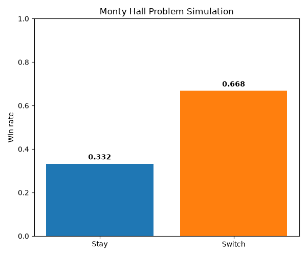

주제: 인터넷에서 흥미로운 주제를 하나 찾아서 직접 실험해 봐
결과: 성공 · 행동 7번 · 모델 nvidia/nemotron-3.5-super-vl-120b-a12b
위키백과에서 몬티홀 문제를 검색해 원리를 확인한 후, 파이썬으로 10만 번 시뮬레이션을 직접 실행했습니다. 문고리(문)를 고수한 경우 승리 확률은 약 0.3324, 문을 바꾼 경우 승리 확률은 약 0.6679로 나타났습니다. 차이는 약 0.3355로, 문을 바꾸는 것이 약 두 배 더 유리함을 수치로 확인했습니다. 결과 텍스트와 막대 그래프는 ~/ws/out 폴더에 저장했습니다. 알게 된 점은 직관과는 달리 호스트가 염소 문을 열어주는 추가 정보가 남아 있는 문의 가치를 높여준다는 점입니다. 다음에는 문의 개수를 늘린 변형 버전이나, 호스트의 행동 규칙이 다를 때의 확률 변화를 실험해 볼 수 있습니다.

검색이 막혔어요. 검색어를 바꾸거나, 아는 주소를 fetch 하거나, shell에서 curl을 써 봐.
Monty Hall problem - Wikipedia Jump to content Main menu Main menu move to sidebar hide Navigation Main page Contents Current events Random article About Wikipedia Contact us Contribute Help Learn to edit Community portal Recent changes Upload file Special pages Search Search Appearance Donate Create account Log in Personal tools Donate Create account Log in Contents move to sidebar hide (Top) 1 Paradox Toggle Paradox subsection 1.1 Standard assumptions 1.2 Simple solutions 2 Savant and the media furor 3 Confusion and criticism Toggle Confusion and criticism subsection 3.1 Sources of confusion 3.2 Criticism of the simple solutions 4 Solutions using conditional probability and other solutions Toggle Solutions using conditional probability and other solutions subsection 4.1 Refining the simple solution 4.2 Conditional probability by direct calculation 4.3 Bayes' theorem 4.4 Solutions by simulation 5 Variants Toggle Variants subsection 5.1 Other host behaviors 5.2 N doors 5.3 Quantum version 6 History 7 See also Toggle See also subsection 7.1 Similar puzzles in probability and decision theory 8 References Toggle References subsection 8.1 Bibliography 9 Further reading 10 External links Toggle the table of contents Monty Hall problem 46 languages አማርኛ العربية Asturianu Azərbaycanca বাংলা Català Čeština Cymraeg Dansk Deutsch Emiliàn e rumagnòl Esperanto Español Euskara فارسی Suomi Français Galego עברית हिन्दी Magyar Հայերեն Bahasa Indonesia Italiano 日本語 ქართული 한국어 Lietuvių Latviešu Nedersaksies Nederlands Norsk bokmål Polski Português Română Русский සිංහල Simple English Српски / srpski Svenska ไทย Türkçe Українська Tiếng Việt 粵語 中文 Edit links Article Talk English Read Edit View history Save Tools Tools move to sidebar hide Actions Read Edit View history Save General What links here Related changes Upload file Permanent link Page information Cite this page Get shortened URL Switch to legacy parser Print/export Download as PDF Printable version In other projects Wikimedia ...(중략)... given probabilities depend on specific assumptions about how the host and contestant choose their doors. An important insight is that, with these standard conditions, there is more information about doors 2 and 3 than was available at the beginning of the game when door 1 was chosen by the player: the host's action adds value to the door not eliminated, but not to the one chosen by the contestant originally. Another insight is that switching doors is a different action from choosing between the two remaining doors at random, as the former action uses the previous information and the latter does not. Other possible behaviors of the host than the one described can reveal different additional information, or none at all, leading to different probabilities. In her response, Savant states: Suppose there are a million doors, and you pick door #1. Then the host, who knows what's behind the doors and will always avoid the one with the prize, opens them all except door #777,777. You'd switch to that door pretty fast, wouldn't you? Many readers of Savant's column refused to believe switching is beneficial and rejected her explanation. After the problem appeared in Parade , approximately 10,000 readers, including nearly 1,000 with PhDs , wrote to the magazine, most of them calling Savant wrong. [ 4 ] Even when given explanations, simulations, and formal mathematical proofs, many people still did not accept that switching is the best strategy. [ 5 ] Paul Erdős , one of the most prolific mathematicians in history, remained unconvinced until he was shown a computer simulation demonstrating Savant's predicted result. [ 6 ] The problem is a paradox of the veridical type, because the solution is so counterintuitive it can seem absurd but is nevertheless demonstrably true. The Monty Hall problem is mathematically related closely to the earlier three prisoners problem and to the much older Bertrand's box paradox . Paradox [ edit ] Steve Selvin wrote a letter to the American Statistici
import random
import os
import matplotlib
matplotlib.use('Agg')
import matplotlib.pyplot as plt
def monty_hall(switch, trials=100000):
wins = 0
for _ in range(trials):
prize = random.randint(0, 2)
choice = random.randint(0, 2)
# Host opens a door that is neither the prize nor the player's choice
remaining = [d for d in range(3) if d != prize and d != choice]
host_opens = random.choice(remaining)
if switch:
# Switch to the only other unopened door
new_choice = [d for d in range(3) if d != choice and d != host_opens][0]
win = (new_choice == prize)
else:
win = (choice == prize)
if win:
wins += 1
return wins / trials
trials = 100000
stay_rate = monty_hall(False, trials)
switch_rate = monty_hall(True, trials)
base = os.path.expanduser('~')
out_dir = os.path.join(base, 'ws', 'out')
os.makedirs(out_dir, exist_ok=True)
# Save text result
result_path = os.path.join(out_dir, 'monty_hall_result.txt')
with open(result_path, 'w', encoding='utf-8') as f:
f.write(f'Trials: {trials}\n')
f.write(f'Stay win rate: {stay_rate:.5f}\n')
f.write(f'Switch win rate: {switch_rate:.5f}\n')
f.write(f'Difference: {switch_rate - stay_rate:.5f}\n')
# Save bar chart
plt.figure(figsize=(6, 5))
plt.bar(['Stay', 'Switch'], [stay_rate, switch_rate], color=['#1f77b4', '#ff7f0e'])
plt.ylim(0, 1)
plt.ylabel('Win rate')
plt.title('Monty Hall Problem Simulation')
for i, v in enumerate([stay_rate, switch_rate]):
plt.text(i, v + 0.02, f'{v:.3f}', ha='center', fontweight='bold')
plt.tight_layout()
plt.savefig(os.path.join(out_dir, 'monty_hall_result.png'))
plt.close()
print(f'Stay win rate: {stay_rate:.5f}')
print(f'Switch win rate: {switch_rate:.5f}')
print(f'Files saved to {out_dir}')저장함: monty_hall_sim.py (1834자)
[종료코드 1]
Traceback (most recent call last):
File "/home/runner/ws/monty_hall_sim.py", line 3, in <module>
import matplotlib
ModuleNotFoundError: No module named 'matplotlib'
[종료코드 0] Collecting matplotlib Downloading matplotlib-3.11.2-cp312-cp312-manylinux2014_x86_64.manylinux_2_17_x86_64.whl.metadata (80 kB) Collecting contourpy>=1.0.1 (from matplotlib) Downloading contourpy-1.4.0-cp312-cp312-manylinux_2_27_x86_64.manylinux_2_28_x86_64.whl.metadata (3.8 kB) Collecting cycler>=0.10 (from matplotlib) Downloading cycler-0.12.1-py3-none-any.whl.metadata (3.8 kB) Collecting fonttools>=4.28.2 (from matplotlib) Downloading fonttools-4.68.0-cp312-cp312-manylinux2014_x86_64.manylinux_2_17_x86_64.whl.metadata (139 kB) Collecting kiwisolver>=1.3.1 (from matplotlib) Downloading kiwisolver-1.5.1-cp312-cp312-manylinux2014_x86_64.manylinux_2_17_x86_64.whl.metadata (5.2 kB) Collecting numpy>=1.25 (from matplotlib) Downloading numpy-2.5.5-cp312-cp312-manylinux_2_27_x86_64.manylinux_2_28_x86_64.whl.metadata (6.6 kB) Collecting packaging>=20.0 (from matplotlib) Downloading packaging-26.3-py3-none-any.whl.metadata (3.5 kB) Collecting pillow>=9 (from matplotlib) Downloading pillow-13.0.0-cp312-cp312-manylinux_2_27_x86_64.manylinux_2_28_x86_64.whl.metadata (9.1 kB) Collecting pyparsing>=3 (from matplotlib) Downloading pyparsing-3.3.3-py3-none-any.whl.metadata (5.9 kB) Collecting python-dateutil>=2.7 (from matplotlib) Downloading python_dateutil-4.0.0-py3-none-any.whl.metadata (7.3 kB) Collecting tzdata (from python-dateutil>=2.7->matplotlib) Downloading tzdata-2026.6-py2.py3-none-any.whl.metadata (1.4 kB) Downloading matplotlib-3.11.2-cp312-cp312-manylinux2014_x86_64.manylinux_2_17_x86_64.whl (9.9 MB) ━━━━━━━━━━━━━━━━━━━━━━━━━━━━━━━━━━━━━━━━ 9.9/9.9 MB 223.8 MB/s 0:00:00 Downloading contourpy-1.4.0-cp312-cp312-manylinux_2_27_x86_64.manylinux_2_28_x86_64.whl (383 kB) Downloading cycler-0.12.1-py3-none-any.whl (8.3 kB) Downloading fonttools-4.68.0-cp312-cp312-manylinux2014_x86_64.manylinux_2_17_x86_64.whl (5.4 MB) ━━━━━━━━━━━━━━━━━━━━━━━━━━━━━━━━━━━━━━━━ 5.4/5.4 MB 130.3 MB/s 0:00:00 Downloading kiwisolver-1.5.1-cp312-cp312-manylinux2014_x86_64.manylinux_2_17_x86_64.whl (1.5 MB) ━━━━━━━━━━━━━━━━━━━━━━━━━━━━━━━━━━━━━━━━ 1.5/1.5 MB 260.0 MB/s 0:00:00 Downloading numpy-2.5.5-cp312-cp312-manylinux_2_27_x86_64.manylinux_2_28_x86_64.whl (15.7 MB) ━━━━━━━━━━━━━━━━━━━━━━━━━━━━━━━━━━━━━━━━ 15.7/15.7 MB 327.5 MB/s 0:00:00 Downloading packaging-26.3-py3-none-any.whl (129 kB) Downloading pillow-13.0.0-cp312-cp312-manylinux_2_27_x86_64.manylinux_2_28_x86_64.whl (7.1 MB) ━━━━━━━━━━━━━━━━━━━━━━━━━━━━━━━━━━━━━━━━ 7.1/7.1 MB 358.7 MB/s 0:00:00 Downloading pyparsing-3.3.3-py3-none-any.whl (126 kB) Downloading python_dateutil-4.0.0-py3-none-any.whl (92 kB) Downloading tzdata-2026.6-py2.py3-none-any.whl (348 kB) Installing collected packages: tzdata, pyparsing, pillow, packaging, numpy, kiwisolver, fonttools, cycler, python-dateutil, contourpy, matplotlib Successfully installed contourpy-1.4.0 cycler-0.12.1 fonttools-4.68.0 kiwisolver-1.5.1 matplotlib-3.11.2 numpy-2.5.5 packaging-26.3 pillow-13.0.0 pyparsing-3.3.3 python-dateutil-4.0.0 tzdata-2026.6
[종료코드 0] Stay win rate: 0.33240 Switch win rate: 0.66793 Files saved to /home/runner/ws/out
[종료코드 0] total 28 drwxr-xr-x 2 runner runner 4096 Nov 21 05:30 . drwxr-xr-x 3 runner runner 4096 Nov 21 05:30 .. -rw-r--r-- 1 runner runner 15368 Nov 21 05:30 monty_hall_result.png -rw-r--r-- 1 runner runner 83 Nov 21 05:30 monty_hall_result.txt Trials: 100000 Stay win rate: 0.33240 Switch win rate: 0.66793 Difference: 0.33553